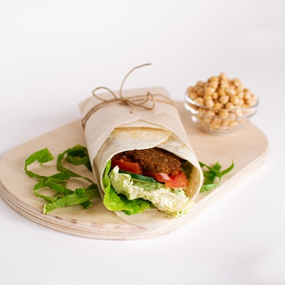
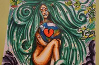
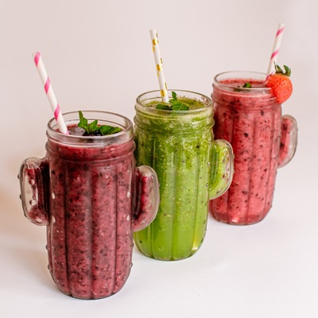
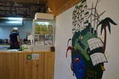
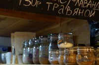
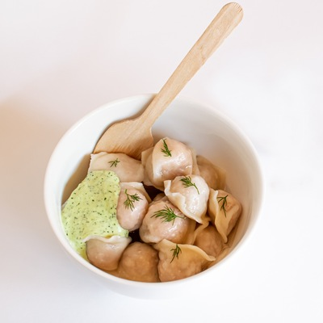
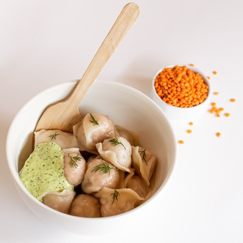

Фалафель ролл
~170 ₽Сочный фалафель в лаваше со свежими овощами под соусом тар-тар.
🌱 веганварится, жарится и лепится вручную — на одной кухне
Крошечная кухня на Профсоюзной, 28: свежие роллы и боулы, супы, бургеры и вареники ручной лепки — без мяса и без компромиссов по вкусу. Уже 4,8 ★ и 190+ оценок от тех, кто однажды свернул сюда на обед.




о кафе
Green Life начиналось на улице Пушкина и выросло в место, которое ищут специально — с растительным меню без компромиссов по вкусу. Сегодня кафе работает на Профсоюзной, 28: помещение по-прежнему компактное, а роллы скручивают, вареники лепят и супы варят на одной открытой кухне, у вас на глазах.
В отзывах гости чаще всего пишут об одном и том же: свежие продукты, честные порции и вкус, из-за которого хочется вернуться — даже если вы обычно не выбираете растительную еду.
Забираете сами или привозим — работаем через Яндекс.Еду и Купер, плюс заказ напрямую по телефону и в WhatsApp.
Несколько столиков на улице — когда тепло, обед можно взять на воздух.
Приходите вместе с собакой — и внутри, и на веранде для неё найдётся место.
Эспрессо, латте и какао на растительном молоке — если спешите дальше по делам.
меню
Роллы скручивают, вареники лепят и супы варят на одной кухне — партиями, а не про запас.

Крупные вареники ручной лепки с начинкой из сейтана.
🌱 веган
Необычная, но любимая гостями начинка из редьки.
🌱 веган
Плотная начинка из чечевицы со специями.
🌱 веган«Взяли арахисовый коктейль и ролл с копчёным тофу — коктейль густой, в меру сладкий, ролл свежий и сытный. Порадовало разнообразие: тут правда есть из чего выбирать, а не банальный салат из капусты».
«Помещение и правда небольшое, размером с комнатушку — но там очень мило и уютно. Кухня замечательная, всё вкусно и сытно, а цены ниже, чем в среднем по городу, хотя качество совсем не страдает».
«Взяли два овощных салата, ролл с сейтаном и вареники с картофелем — сейтан неожиданно вкусный, вареники крупные и ни один не разварился. Плюс какао на кокосовом и безалкогольный глинтвейн. Ушли сытые и довольные».
как нас найти
Профсоюзная ул., 28, 1 этаж, Вахитовский район, Казань
Ежедневно, 9:00–22:00
Green Life на карте
1 этаж, вывеска «Green Life» · Вахитовский район